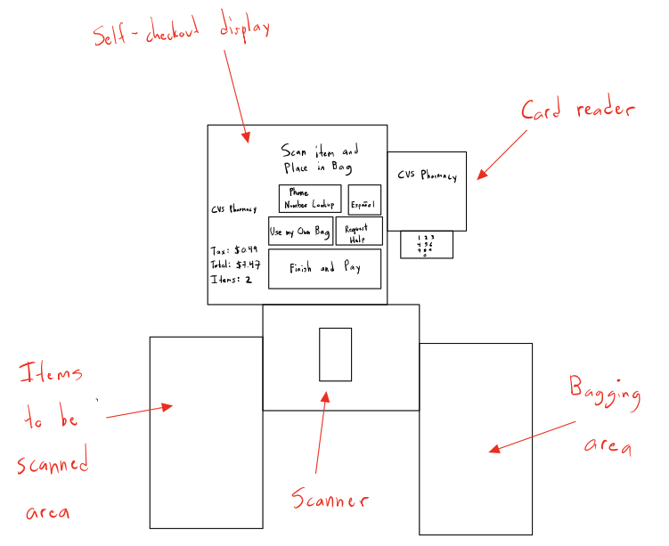
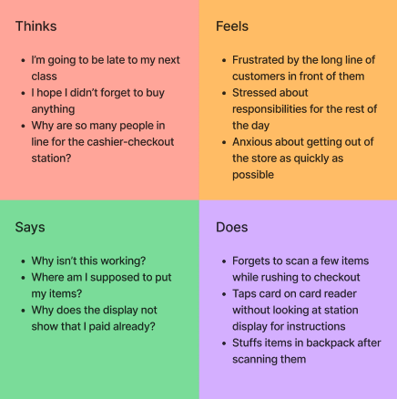
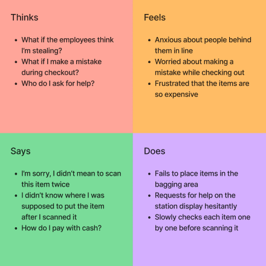
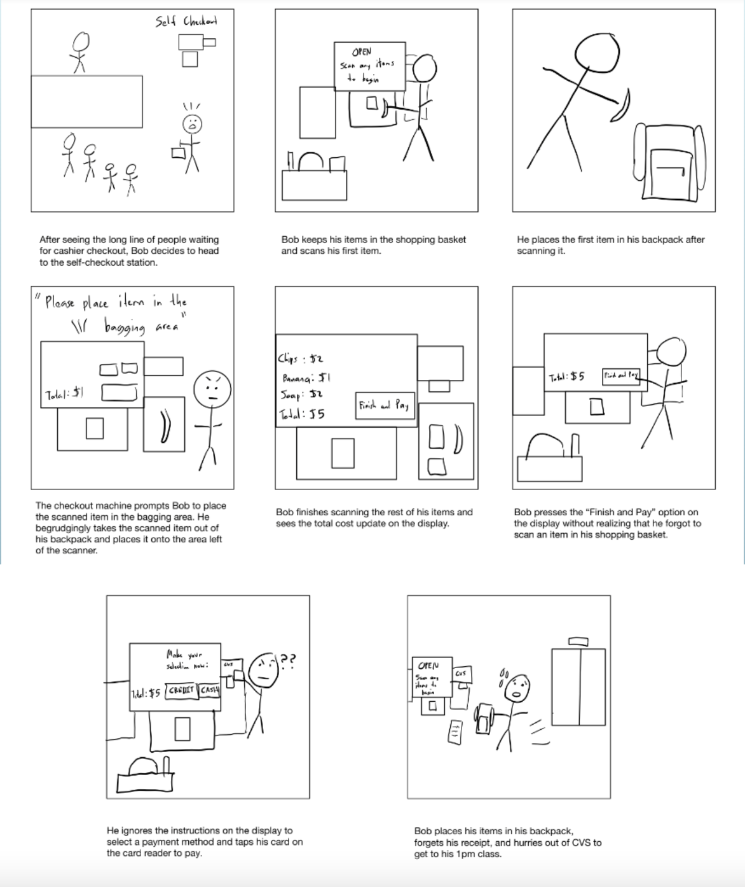

CVS Self-Checkout Station Personas & Storyboarding
Context
The goal of this project was to analyze how users interact with an interface so that I could better understand its strengths and limitations. In particular, I looked at how CVS shoppers use the self-checkout interface to purchase store items. I first conducted user research to understand their motivations and pain points with using the interface. I then brainstormed personas to match my observations so that I could get a better understanding of the types of users that interact with the self-checkout station. Finally, I created a storyboard to depict a typical user journey of a CVS customer interacting with the interface.
Diagram
Users place all items to be purchased in the area left of the scanner and scan each item one by one. Users can interact with the display in order to request help from an employee, proceed to the payment process, change the language, etc. Once all the items have been scanned and are in the bagging area, users pay by using the card reader.
Click to enlarge
User Research
User Observations
User Interviews
-
Why did you choose the self-checkout station instead of
the
cashier-checkout station?
> Users chose the self-checkout station because they thought it would be quicker than waiting in line for a cashier-checkout station -
Did the self-checkout station interface perform as you
expected? If not, which parts were confusing?
> Users were confused with the payment process, as the instructions on the station display did not match the ones given on the card reader -
What were the easiest and hardest tasks to accomplish
using
the interface?
> Users generally found scanning each item to be the easiest task and placing their items in the correct place to be the hardest - How did you feel while using the self-checkout station?
> Users felt nervous about scanning items incorrectly, as there was no clear way to undo an item scanned by mistake on the display
Personas
Rushed Student
The rushed student takes five classes at Brown University and is getting toiletries and snacks for their dorm. This user struggles with placing items in the correct area of the self-checkout station and starting the payment process on the display. This persona represents users I observed who were in a hurry and hoping to use the self-checkout station so that they could leave the store quicker.
Cautious Shopper
The cautious shopper lives walking distance from CVS and has a list of items they want to buy after doing research online. This user primarily struggles with figuring out how to undo mistakenly scanned items and selecting a payment method. This persona represents users I interviewed who were nervous about using the self-checkout station due to concerns that they would be flagged for stealing items, when in reality they were just confused with the interface.
Storyboard
This storyboard represents the rushed student discussed above.
Click to enlarge
Conclusion
This project taught me how important user research is for understanding the strengths and limitations of an interface. I learned how formulate good questions for user research and how to synthesize my research and observations to create more generalized personas. As an aspiring product manager, it will be important for me to use these skills to take a customer-centric approach when designing and implementing a project.